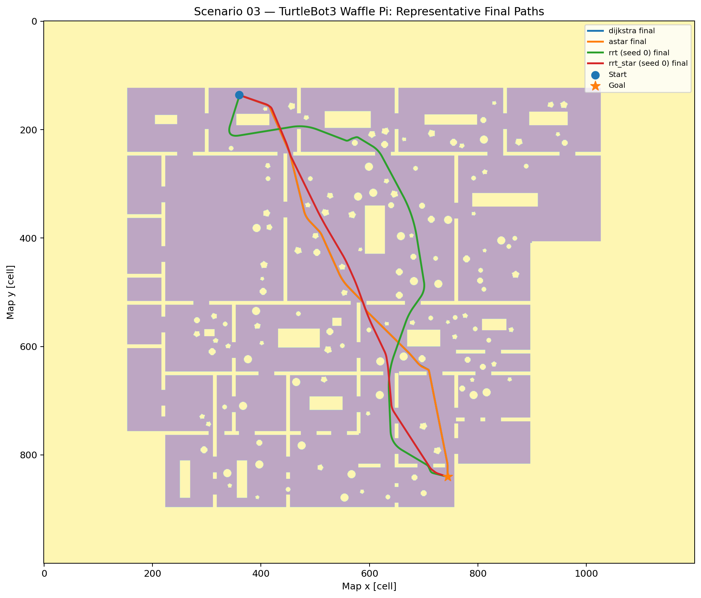
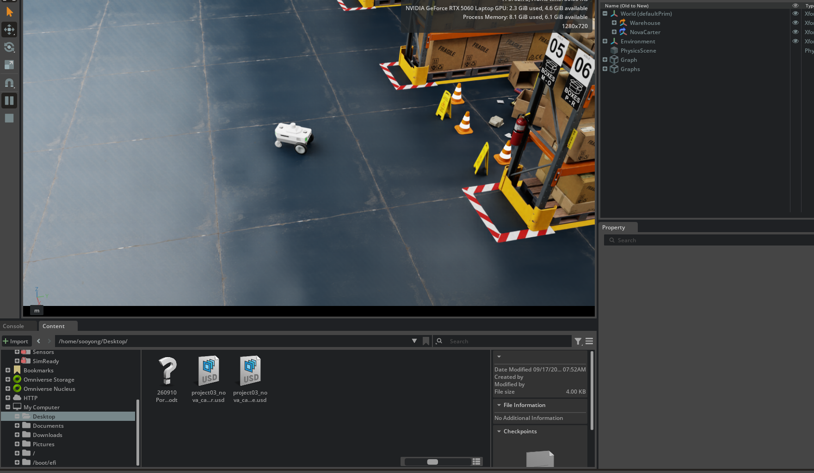

Featured Engineering Projects
Current robotics engineering work
Selected completed projects spanning robot-aware autonomy, analytical modeling and control, and multi-sensor perception.

Autonomy
Robot-Aware Path Planning
Planner behavior evaluated against robot geometry, continuous clearance, safety-aware velocity, and mission-level execution.
4 planners2 robot platforms3 scenarios
View project →

Modeling & Control
UR5e Modeling & Control
Four-stage program from model reconciliation and rigid-body dynamics to controller design, Isaac Sim validation, and ROS 2/C++ execution.
4 stagesPID / CT / LQR / MPC3 validation layers
View program →

3D Perception
LiDAR-Camera 3D Perception & Fusion
Calibrated 3D-to-2D projection, object-level range association, segmentation, and robustness evaluation in NVIDIA Isaac Sim.
ROS 2Isaac SimSensor fusion
View project →